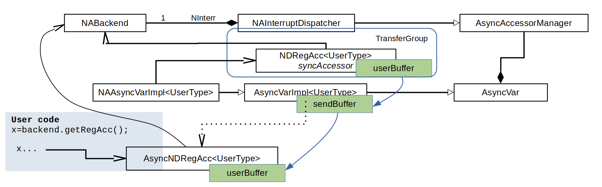

Concept overview
- Warning
- This concept is outdated. It describes the current state but will change with the introduction of nested interrupts and interrupt controller handlers!

object diagram for AyncNDRegisterAccessor
- For each AsyncAccessor that user requests: an AsyncVariable is created interally, with 1:1 correspondence AsyncAccessor ↔ AsyncVar
- AsyncAccessor reads from AsyncVar and is handed out to user; AsyncVariable holds the send buffer which is used to fill userBuffer of AsyncAccessor later
- NumericAddressedAsyncVarImpl implements filling the send buffer from a syncAccessor to the requested register
- NumericAddressedInterruptDispatcher is responsible for one interrupt number and collects related SyncAccessors in a transferGroup for efficiency. It implements the actual trigger action (on interrupt), relying on NumericAddressedAsyncVarImpl::filledSendBuffer().
- AsyncVarImpl holds only a weak pointer to the AsyncAccessor, since we want to be sensitive to the user discarding the latter
- NumericAddressedInterruptDispatcher, as a AsyncAccessorManager, owns and manages the AsyncVariables (in a map).
- Actual copy operations are eliminated by usage of swap, i.e. only pointers are handed over between the buffer containers.
- Exception handling: If any exception occurs during read/write, AsyncAccessorManager deactivates the AsyncVariables and provides each of them the exception. When activated again, it makes sure new or initial values from the SyncAccessors are provided.
- Deletion: once user releases shared pointer to AsyncNDRegAcc, its destructor calls AsyncAccessorManager::unsubscribe(). Since the syncAccessors in the TransferGroup keep a shared pointer to the NumericAddressBackend, unsubscribe() must also take care to clean up TransferGroup.
The AsyncNDRegisterAccessor and the AsyncAccessorManager
The AsyncNDRegisterAccessor is a generic NDRegisterAccessor implementation for push-type data. It is used if accessors with AccessMode::wait_for_new_data are requested. See Technical specification: TransferElement B.8 for the requirements it is based on.
The AsyncNDRegisterAccessor is a generic implementation which can be used for all backends and contains the following components
- a lock free queue to transport data of type NDRegisterAccessor<UserType>::Buffer, which contains the data value (2D vector of UserType), a VersionNumber and a DataValidity flag.
- functions to activate/deactivate the accessor, and to push data and exceptions into the queue
- a (synchronous) accessor which is used for write operations (optional)
A trigger domain is a set of registers for which the data is always send together. Examples:
- For the pcie backend, a set of registers described in the map file is read from the device and the data is pushed into the according AsyncNDRegisterAccessessors when the according interrupt occurs.
- For push-type data with a composed data type, DeviceAccess provides individual registers for the components which make up a trigger domain (e.g. for a DOOCS IFFF there is one int and three floats in the trigger domain).
- A trigger domain can consist of a single register.
One AsyncAccessorManager is used per trigger domain. The AsyncAccessorManager has three main functions:
- It serves as a factory for AsyncNDRegisterAccessors
- It contains a list of created asynchronous accessors and a subscribe/unsubscribe mechanism
- It provides functions to act on all asynchronous accessors
Design decisions and implementation details
- The data transport queue contains data that is already converted to the UserType, so the potentially expensive and slow operations (data readout, de-multiplexing, data conversion) are happening only once, before the data is distributed to multiple subscribers.
- To unsubscribe, the NDRegisterAccessor is calling AsyncAccessorManager::unsubscribe() with its TransferElementID from the destructor.
- The class AsyncVariable represents the sender side of the asynchronous accessor.(*) It provides functions to send data and exceptions, to activate and to deactivate the accessors, and it implements all the handling of the contained AsyncNDRegisterAccessor instance. In addition it provides shape information for creating AsyncNDRegisterAccessors to the AsyncAccessorManager.
- A send buffer is contained in the AsyncVariable to avoid dynamic memory allocation.
- The void notification queue in the TransferElement base class is set up as a continuation of the data transport queue, such that the read operations of the notification queue trigger the filling of the user buffer.
(*) C++ implementation detail: There is AsyncVariable as an untyped base class and AsyncVariableImpl, which is templated to a user type. Like this pointers to variables with different user types can be stored in one list.
Interface for implementing backends
While the AsyncNDRegisterAccessor itself is complete and universal, the AsyncAccessorManager and AsyncVariable have pure virtual functions which must be provided by the individual backend implementations:
The backend uses the AsyncNDRegisterAccessor by
The code sending the data has to follow a similar sequence as AsyncAccessorManager::activate():
- Lock the _variablesMutex which protects the container of AsyncVariables, so no entries can be added or removed
- Generate a new version number while holding the lock. All accessors of the same trigger domain must have the same version number for the same trigger.
- Prepare the _sendBuffer, incl. data validity flag and version number for each AsyncVariable
- Call send() on all AsyncVariables
- 3. and 4. can also be implemented together by looping all variables once, i.e. preparing the _sendBuffer and calling send() for one variable before continuing with the next one.
(*2) The reason to put this into the AsyncVariable is coming from the NumericAddressedBackend. It adds a synchronous accessor to the AsyncVariable which is used for reading and provides this information. The logic to generate this information is in the creation code for the synchronous accessor. Other backends might have similar advantages from having the functions the AsyncVariable, or at least they don't care much where the functions are implemented.
(*3) Locking of the mutex, generating the version number and calling activate() on each variable could be factored into the manager, with additional virtual functions that are called in between, but this means the container needs to be looped several times and the design gets more complicated and involved, and hence the implementation is left to the backend.
(*4) Holding the mutex while accessing the AsyncVariables actually serves two purposes:
- It prevents the container from being modified and variables going out of scope while being accessed.
- The AsyncVariables and the AsyncNDRegisterAcessors in them are not thread safe, and activation/deactivation, exception sending and data sending are coming from different threads.
(*5) Even if the implementation already has a synchronous read accessor, like the NumericAccdressedBackend, this cannot be used for writing. The write is coming from a user thread, while the read is coming from a thread receiving data though the transfer protocol.
Implementation in the NumericAddressedBackend
Asynchronous registers in the map file
# name nElements address nBytes bar width bitInterpretation signed accessMode
APP.0.DATA_READY 0 0 0 0 0 0 0 INTERRUPT1
APP.0.PUSH_DATA 4 12 16 1 32 8 1 INTERRUPT2
The map file has a special access mode INTERRUPTx, in addition to the synchronous modes RW and RO. x is the numeric identifyer for a device interrupt. Registers with access mode INTERRUPT are treated as read-only. In future, this will be extended to allow nested interrupts (INTERRUPTx:y, INTERRUPTx:y:z, etc.) in combination with interrupt controller handlers.
For interrupts it is possible to have void-type entries. The width of these "registers" is 0 bits. For consistency all other fields also have to be 0. They don't make sense in this context and have to be 0 to avoid confusion.
Design and implementation details
The NumericAddressedBackend has a complete implementation of the AsyncAccessorManager and the AsyncVariable, called NumericAddressedInterruptDispatcher and NumericAddressedAsyncVariable, respectively.
- Each NumericAddressedAsyncVariable has a synchronous accessor for reading the data from the device when an interrupt arrives.
- Each NumericAddressedInterruptDispatcher has a transfer group with all the synchronous read accessors, so the data transfer is optimised under the hood (data is only transferred once, transfers are merged, copy decorators are used where necessary so de-multiplexing and conversion is only happening once, and the converted data is duplicated).
- There is one NumericAddressedInterruptDispatcher per interrupt that is described in the map file. They are created when the map file is being processed.
- The accessor manager has been extended by a trigger() function, which reads the transfer groups and dispatches the read results to all subscribed asynchronous accessors.
Interface to implementing backends
The list of accessor managers is private, and all implementing backends interface with it through two functions.
- NumericAddressedBackend::startInterruptHandlingThread(unsigned int interruptControllerNumber, unsigned int interruptNumber) is a virtual function which is called each time an accessor for that interrupt is requested. This allows the lazy start of the interrupt handling threads, which are not started if no accessors are requested. The implementation must assure that the thread is only started once. In general, the NumericAddressedBackend does not take care of interrupt handling threads, except for calling this virtual function. Each backend implementation has to take care that treads are started, terminated and joined correctly. There is an empty default implementation of startInterruptHandlingThread() for backward compatibility (backends that don't support asynchronous data (yet) or that don't need a separate thread like the dummies).
- The interrupt handling threads call NumericAddressedBackend::dispatchInterrupt(unsigned int interruptControllerNumber, unsigned int interruptNumber) each time the according interrupt arrives.
All other functionality for subscription, activation/deactivation and exception handling is already handled in the NumericAddressedBackend base class.